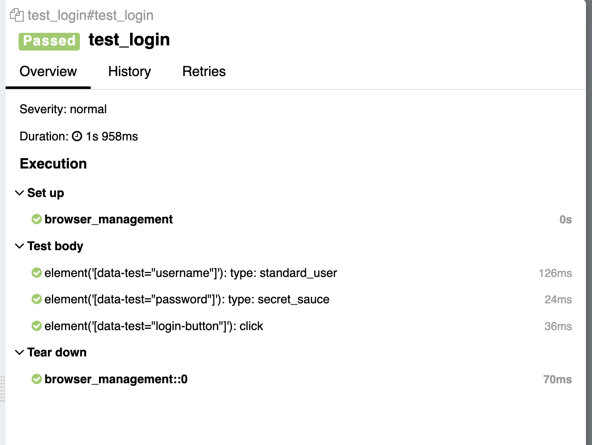

Дата /
Название
29.03.2026
Автоматическое логгирование шагов в Selene
Selene - прекрасная библиотека, которая позволяет писать прекрасные автотесты. Ниже представлен рецепт приготовления автоматичесского логгирования шагов в Selene.
Пилим фикстурку
import pytest
import allure_commons
from selene import support, browser
@pytest.fixture(autouse=True)
def browser_management():
browser.config._wait_decorator = support._logging.wait_with(
context=allure_commons._allure.StepContext
)
yield
browser.quit()
Пишем тест
from selene.support.shared.jquery_style import s
from selene import browser
def test_login():
browser.open("https://www.saucedemo.com/")
s('[data-test="username"]').type("standard_user")
s('[data-test="password"]').type("secret_sauce")
s('[data-test="login-button"]').click()
Наслаждаемся

Будет дополнено.